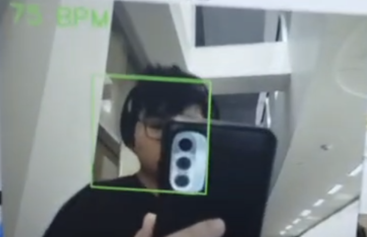
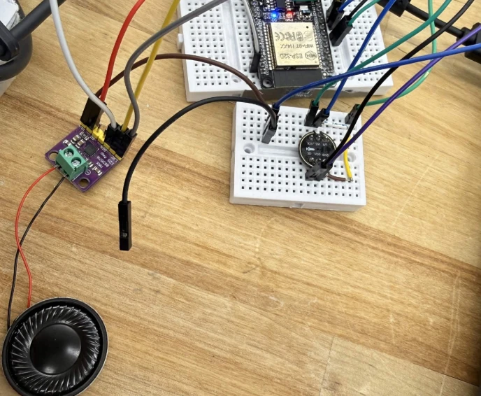
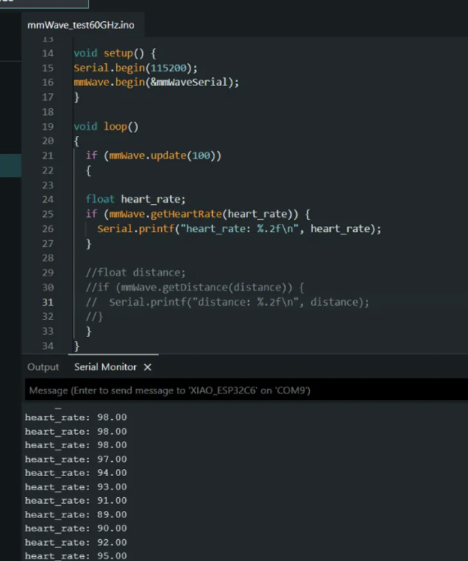

Milestone 1
About the Project
Navi is a desktop healthcare robot built by Jack Wei, Thanadetch Mateedunsatits and Luke Wei. Sitting on a desk, it measures a person's heart rate and breathing rate without touching them, using two sources: rPPG (remote photoplethysmography, which reads the pulse from tiny color changes in the face on camera) and a 60 GHz mmWave radar sensor. It asks the user to log their mood, shows its reading of their vitals on a small touchscreen face, and responds with comforting voice lines and conversation.
Navi is our MVP. Our stretch goal is to grow it into Baymax from Big Hero 6, which is where this site gets its name: the same sensing and mood tracking, plus soft, tendon-driven arms that can give a hug.
This page reports where the project stands at Milestone 1 and our plan for Milestone 2.
Updates to MVP and Stretch Goals
MVP
The MVP from our proposal:
- [SENSING ENGINE] Measure heart rate and breathing rate with the mmWave sensor and/or rPPG, and make decisions from there. If rPPG fails, fall back to the mmWave sensor (MR60BHA2), which we know works.
- [ASK MOOD] On the display, ask the user to rate their mood from 1 to 10.
- [DIAGNOSE] Using the sensors and camera, display the robot's current understanding of the user's mood and other metrics.
- [COMFORT] Voice lines to calm and comfort the user.
- [COMMUNICATE] Talk with the user like a normal AI assistant.
New since the proposal:
- [VALIDATE] Prompt the user to put their thumb on the PPG sensor in order to get super accurate data on the user's health biometrics.
Reasoning: we needed a way to validate the data. We received a SparkFun PPG sensor from Prof. Chhavi Goenka, which we will implement into the build as a validation source for testing and a calibration unit in the final design.
Stretch Goals
Our stretch goals are unchanged from our proposal. Everything in the MVP carries over to Baymax (the mmWave-rPPG sensing pipeline, mood tracking and the display), and we add:
- SpiRob-inspired, tendon-driven arms
- High-power servos to control these arms
- Control logic (PID and others) to create a hugging arm motion
- Inflatable arms and an inflatable body
Status of Computational / Hardware Set-up
All hardware sourced. All hardware booted up.
- rPPG sensor: tested (+code)

rPPG reading 75 BPM from a webcam feed. - Microphone Speaker (INMP441 microphone, MAX98357A amplifier, 2W 8 Ohm speaker): tested (+code)

INMP441 microphone and MAX98357A amplifier driving the speaker from an ESP32. - mmWave sensor (MR60BHA2): booted up

MR60BHA2 test sketch printing heart rate over serial. - Raspberry Pi 5: booted up
- XPT2046 3.5 inch touchscreen display: booted up
- Arducam camera: being integrated
- SparkFun PPG sensor: sourced (to code)
Physical hardware and peripherals
- Mechanical enclosure (3D printed): not built yet, planned for Milestone 2. It has to hold the Pi, display, camera, mmWave sensor, PPG sensor, microphone and speaker.
- Wake button and potentiometer buttons: planned. The wake button wakes Navi from sleep and doubles as the on/off switch so it never measures anyone without permission; the potentiometer buttons are the fallback controls if voice recognition fails.
Major Components and Status
- rPPG library (rPPG tools): Testing (proven on laptop cam)
- mmWave (prev built on another project; adapting use): Testing
- Microphone/speaker (prev built on another project; adapting use): Troubleshooting
- Display: Implementation
- PPG sensor: Implementation
- Raspberry Pi 5 setup: Done
- Transcription, Recognition, Voice output (prev built on another project; adapting use), Whisper (transcription), TTS (Omnivoice): Testing
- Integrate Arducam: Implementing
Risks to Reaching MVP
- Need to setup PPG sensor to validate data.
- rPPG sensor still needs to be validated.
- Integration: each part works on its own (rPPG on a laptop, mmWave and audio on ESP32 boards), but none run together yet. Getting them talking to the FSM on one system is the biggest unknown.
- Compute: rPPG, any other CV model, Whisper, the LLM and voice generation may be too much for the Raspberry Pi 5 at once. Fallback: run the heavier models on a laptop.
- Sensor fusion: rPPG and mmWave report at different rates, so fusing them takes time-alignment work before any filtering.
- Audio: the microphone pipeline is still in troubleshooting. Fallback: potentiometer buttons for controls instead of voice commands.
- Enclosure: the camera needs a clear view of the face and the mmWave sensor a clear line of sight to the chest, and both have to fit around the display. A poor fit could mean reprinting.
- Schedule: Milestone 2 is 10 days after this update, and the enclosure, FSM and voice pipeline all land in that window.
Goals for Milestone 2 (December 7)
Electro-Mechanical Ends
- Create the mechanical enclosure for the assistant
- Setup PPG sensor
- Hardware fully 3D printed
- Fully completed electro-mechanical aspect
Software
- FSM halfway complete or fully complete
- Look into fusing data from rPPG to mmWave
- Have voicelines setup, have LLM logic setup, have microphone, speaker system setup
- Setup voice commands
- Default to potentiometer buttons if voice recognition fails for controls; removal of the microphone pipeline
Plan and checkpoints
| Checkpoint | Goal | Owner | Done when |
|---|---|---|---|
| Mon, Nov 30 | PPG sensor set up | Detch | PPG heart rate reads on the Pi or ESP32 and is logged next to rPPG for the same person |
| Mon, Nov 30 | rPPG on the Arducam | Luke | rPPG runs on the Arducam feed instead of the laptop camera |
| Mon, Nov 30 | Display face and mood screen | Jack | The touchscreen shows the face and a 1–10 mood prompt that records the answer |
| Mon, Nov 30 | Enclosure design | Detch | Enclosure CAD done, with mounts for every part, and first print started |
| Thu, Dec 3 | FSM halfway | Luke | Sleep, Idle, Active and Ask_mood states run and switch on real inputs |
| Thu, Dec 3 | Voice pipeline | Detch | Speech in, Whisper, LLM, Omnivoice out works end to end |
| Thu, Dec 3 | Validation data | Jack | Apple Watch export script works and one session is recorded against rPPG, mmWave and PPG |
| Mon, Dec 7 | Hardware complete | Detch | All parts mounted in the printed enclosure and powered |
| Mon, Dec 7 | FSM and voice commands | Luke and Detch | Talking and Diagnose states added; voice commands trigger states, or potentiometer buttons do if voice recognition fails |
| Mon, Dec 7 | Sensor fusion investigation | Detch | rPPG and mmWave readings are time-aligned and compared, with a decision on whether to fuse them |